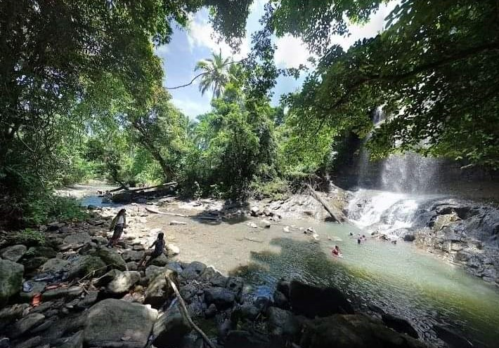
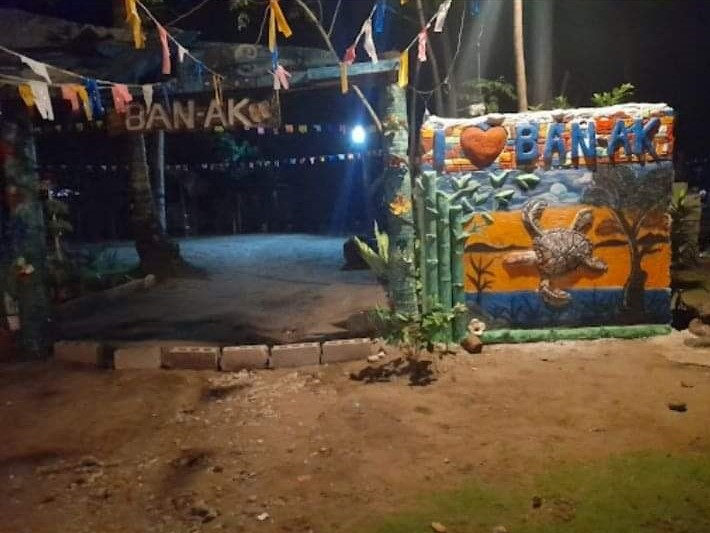
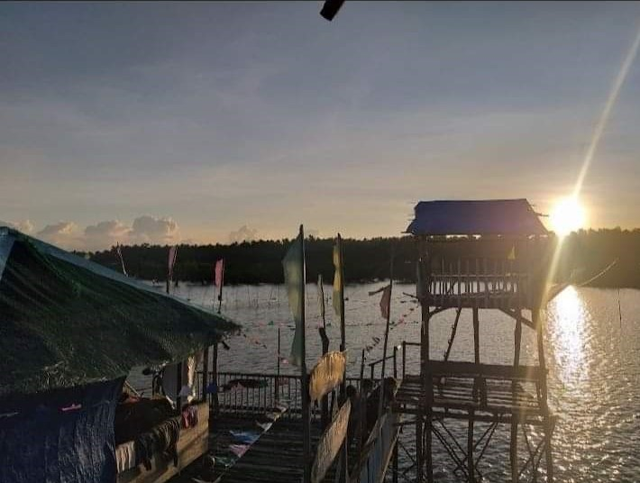

Tourist
Pisak Falls
Pisak falls of Arteche is a natural and a tourist landmark where you can swim and bond with people you want to also a beautiful place with a cold and fresh water.
Pisak falls is located at the Brgy. Balud, Arteche, Eastern Samar.
Ban-ak Beach
Ban-ak beach beach is one of the well known natural landmark of Arteche for its well known white sand a breathtaking view. It is a place where you can celebrates for all occasions specially birthday.
Ban-ak beach is located in Sitio Sabang of Arteche, Eastern Samar
Landing Zone
Landing zone is known for its structure, A cottage like standing in the sea. It has a beautiful viewpoint as you can see from here the Ban-ak beach and the municipality of Arteche.
Landing zone is located in Sitio Sabang of Arteche, Eastern Samar.